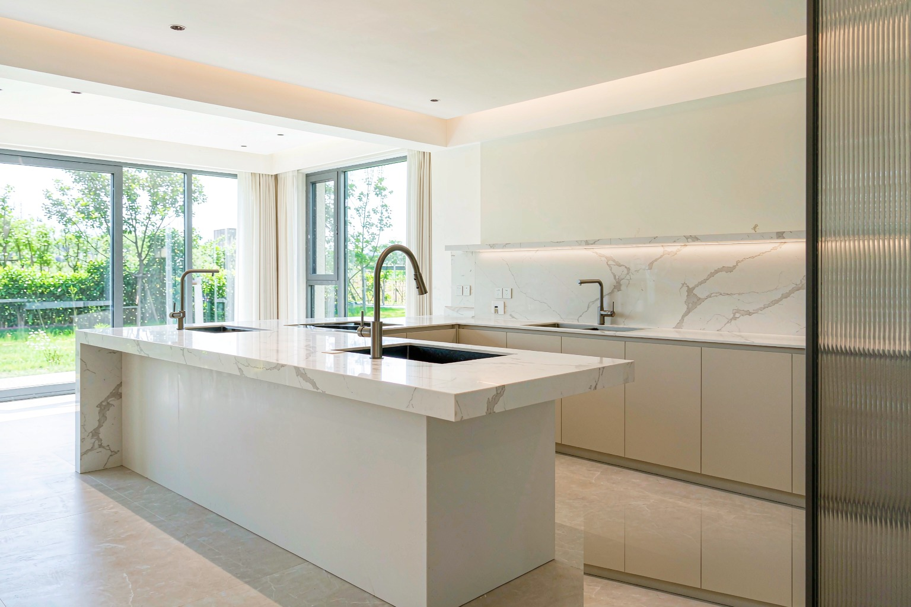
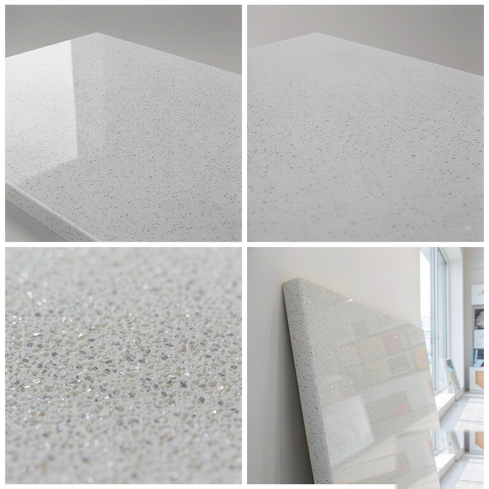
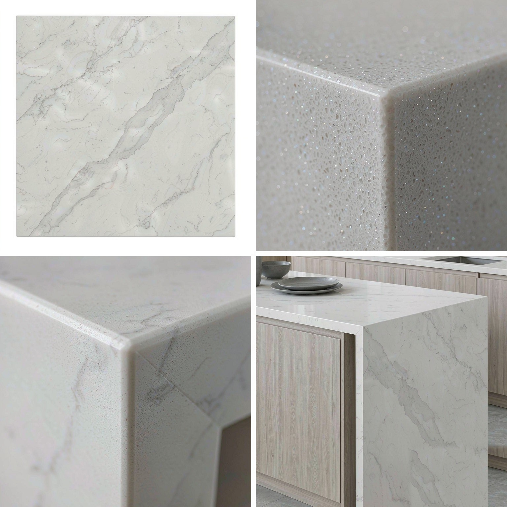

以 90% 以上天然石英晶體配合樹脂高溫壓製而成，莫氏硬度達 6–7，耐刮耐磨、吸水率近乎為零，是廚衛檯面與一體化定製的首選材料。


技術參數 Technical Data
密度
Density
2.35 – 2.45 g/cm³
吸水率
Water Absorption
≤ 0.02 %
抗壓強度
Compressive Strength
150 – 220 MPa
抗彎強度
Flexural Strength
40 – 70 MPa
莫氏硬度
Mohs Hardness
6.0 – 7.0
放射性等級
Radioactivity Class
A 類 Class A
耐磨性
Abrasion Resistance
≤ 30 mm
體積密度
Bulk Density
2,350 – 2,450 kg/m³
* 以上數據為典型值範圍，具體批次可能略有差異。如需特定批次檢測報告，請聯繫我們。
應用場景 Applications
廚房檯面與中島
無縫一體、耐刮易潔，推薦拋光／啞光面
浴室洗手台
吸水率近乎為零，防潮抗汙，推薦啞光面
商業服務檯
耐磨耐刮、色系統一，適合接待檯與吧檯
實驗室與醫療檯面
無孔隙不滲色，易消毒清潔
餐飲吧檯與餐桌
耐熱耐污，日常維護簡單
一體化定製家具
可無縫拼接，造型與收邊自由
可選表面處理工藝
不同表面處理賦予石材不同的質感與功能性
📐 常規規格
3200×1600mm / 3050×1440mm
600×600mm / 800×800mm
接受特殊規格定製
600×600mm / 800×800mm
接受特殊規格定製
📦 常規厚度
12mm / 15mm / 20mm / 30mm
檯面常用 20mm（含前擋邊）
接受特殊厚度定製
檯面常用 20mm（含前擋邊）
接受特殊厚度定製